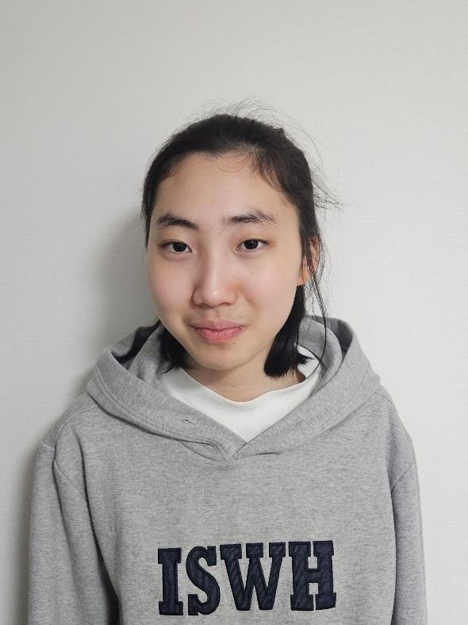

Spotlight: Nayun Kim

1. What is your favorite food?
I like rolled omelets that do not contain vegetables.
2. Is there a place or travel destination you like?
Whenever I have free time, I go on tours of large bakery cafés that I’ve previously searched for. I buy various kinds of bread and cakes, walk around the café as if taking a stroll, and then sit in a spot I like. I enjoy drawing simple sketches in my notebook and listening to music, which is why I love café tours.
3. Besides drawing, are there any other activities or hobbies you enjoy?
I enjoy making my original characters out of clay. I color the clay with marker pens and like creating three-dimensional characters in a variety of colors.
4. Are there any materials you’ve been practicing with more recently, or tools you use most often when drawing (crayons, colored pencils, brushes, etc.)?
I used to draw only with colored pencils, but recently I started using acrylic paint. Colored pencils were nice because of their wide range of colors, but acrylic paint allows me to mix and control the exact colors I want and work with texture. It was difficult at first, but I’m gradually improving and continuing to practice consistently.
5. What does drawing mean to you as an artist, and how does it serve as a way of expressing emotions?
When I first started drawing in elementary school, I spent a lot of time sitting alone. I would watch other friends playing, then go home and draw my own characters, give them names, and create relationships between them. Through drawing, I began to create friends within my artwork.
During school life, when I would say I had no friends, the characters I draw became a support that made school life feel less lonely. Even though they are characters, they are a space where friendship becomes real. Characters filled with relationships and emotions—such as friendship, love, betrayal, and anger—appear like a fantasy.
6. What is your favorite day of the week like?
Thursday, when I have my art class. I want to improve the completeness of my characters, but there are parts that are difficult to figure out on my own. Through guidance, I learn how to draw them independently. Even when I’m not feeling well, I never miss this class and always make sure to attend.
7. How would you like your artistic activities to expand or develop in the future?
Drawing is the activity I spend the most time on during my day, and through it I am growing and finding joy. I hope to have more opportunities to learn and to grow in a direction that can eventually connect to a career.

1. 제일 좋아하는 음식이 뭔가요?
야채가 안들어간 계란말이를 좋아합니다.
2. 좋아하는 장소나 여행지가 있나요?
시간이 날때마다 검색해놓았던 대형 베이커리카페 투어를 합니다. 다양한 종류에 빵과 케이크를 사고 컨셉이 있는 카페 안을 산책하듯 다니다 마음에드는 자리에 앉아 수첩에 간단한 그림도 그리고 음악도 들을수있어 카페투어를 좋아합니다.
3. 그림 외에 좋아하는 활동이나 취미가 있다면 무엇인가요?
내가 그리는 창작캐릭터를 클레이로 만드는 활동을 좋아합니다. 클레이에 마카펜으로 색을 입혀 다양한 색으로 캐릭터를 입체감있게 만드는 활동을 좋아합니다.
4. 요즘 특별히 더 연습하는 재료나, 그림을 그릴 때 손이 가장 많이 가는 도구는 무엇인가요? (크레용, 색연필, 붓 등)
색연필로만 그리다 최근에 아크릴물감을 사용하기 시작했습니다. 색연필은 여러가지 색이 있어 좋았지만 아크릴물감은 내가 만들고싶은 색을 조절하여 만들수있고 질감처리도 가능하다보니 처음에는 어려웠지만 점점 나아지고있어 꾸준하게 연습하고있습니다.
5. 작가에게 그림 그리기가 어떤 의미인지 어떤 감정 표현의 방식인지 설명해주실 수 있나요?
그림을 그리기 시작했던 초등학교때 혼자 앉아있는 시간이 많았습니다. 다른 친구들 노는 모습을 지켜보고 집에와서 나만에 캐릭터를 그리고 이름을 붙여주며 서로서로 관계를 만들어주는 활동으로 그림속에 친구를 만들기 시작했습니다.
친구가 없다고 말하는 학교생활에서 나윤이가 그리는 캐릭터는 학교 생활이 외롭지않게 버팀목이 되어주고 캐릭터지만 친구가 실현되는 공간입니다. 친구.사랑.우정.배신.분노등 다양한 관계와 감정을 갖은 캐릭터들이 판타지 처럼 등장하고 있습니다.
6. 제일 좋아하는 요일의 일상이 궁금해요.
목요일에 하는 미술수업. 캐릭터에 완성도를 높이고싶지만 혼자 생각해서 그려내기 어려운 부분을 지도를 통해 배우고 스스로 그릴 수 있게 배우는 시간이라 컨디션이 안좋아도 수업은 빠지지않고 꼭 가고있습니다.
7. 앞으로 작가의 예술 활동이 어떤 방식으로 확장되거나 발전하면 좋겠다고 생각하시나요?
하루 일과중 가장 많은 시간을 그림을 그리는 활동을 하고 있고 그 안에서 성장하고 즐거워하고 있습니다. 배움에 기회가 다양하게 주어지고 직업까지 연결될 수 있는 방향으로 성장하고싶습니다.